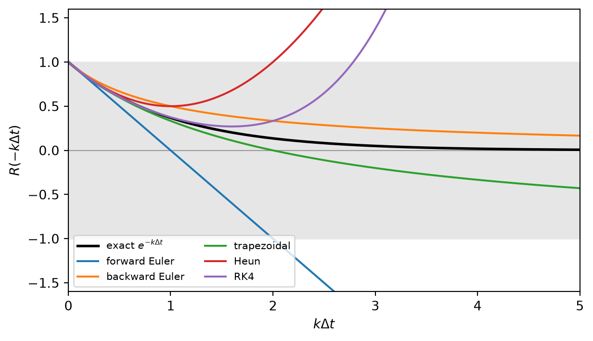
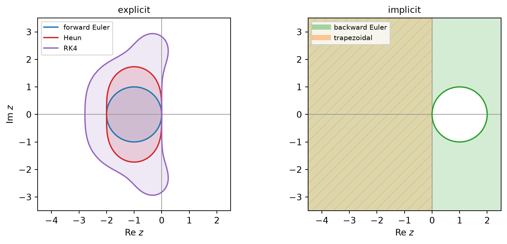
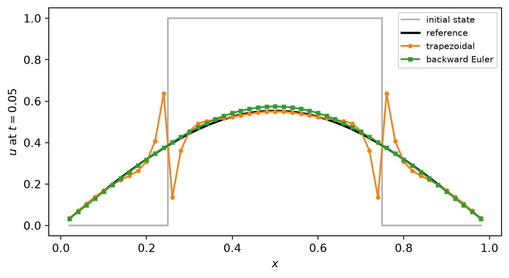
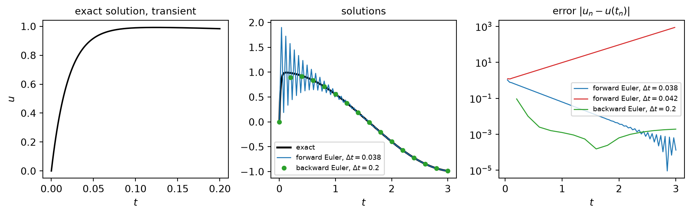

reduce the stability question for a system of ODEs to the test equation \(\mathrm{d}u/\mathrm{d}t = \mu u\) with a complex coefficient \(\mu\), by linearization and the eigenvectors of the Jacobian,
derive the amplification factor of a one-step method and relate it to the order of the method,
derive and draw the stability regions of the Euler methods, the trapezoidal method and the Runge–Kutta methods of unit 5, and compute the largest stable time step for a given problem,
explain A-stability and L-stability and why no explicit method is A-stable,
define consistency, stability and convergence, show that consistency and stability together give convergence, and state the Lax equivalence theorem,
recognize a stiff problem, and decide when an implicit method is worth its cost.
In 1 and Chapter 5 we met the same observation several times: the forward Euler solution of the decay equation \(\mathrm{d}u/\mathrm{d}t = -k u\) decays like the exact solution only if \(k \Delta t < 2\), while the backward Euler solution decays for every time step. For the diffusion equation discretized in space, this means that forward Euler needs \(\Delta t < h^2/(2D)\) (Section 5.3). This unit turns these observations into a theory that applies to every method and every problem, and answers the practical question of which method to choose when the time step is limited by stability rather than by accuracy.
The unit proceeds in five steps:
The test equation (Section 6.1): why the behaviour of a method for any system of ODEs can be read off from a single scalar equation with a complex coefficient.
The amplification factor (Section 6.2): what each method does to the solution of the test equation in one step.
Stability regions (Section 6.3): for which time steps the numerical solution behaves like the exact one; A- and L-stability.
Consistency, stability and convergence (Section 6.4): how the three concepts of 1 fit together.
Stiff problems (Section 6.5): what they are, how to recognize them, and why they are solved with implicit methods.
TipThink first: the exact solution decays. How can the numerical solution grow?
The decay equation has only decaying solutions, yet forward Euler with \(k \Delta t > 2\) produces a solution that grows without bound. Before reading on, write down \(u_{n+1}\) in terms of \(u_n\) and ask: what does the method do to a small error that is already present in \(u_n\)?
6.1 The test equation
The goal of this section: show that the stability of a method for a general system of ODEs is decided by its behaviour for the scalar test equation \(\mathrm{d}u/\mathrm{d}t = \mu u\), where \(\mu\) runs through the eigenvalues of the Jacobian matrix, and that these eigenvalues can be complex.
6.1.1 Small perturbations of a solution
Stability is about errors: an error made in one step, by truncation or by round-off, is carried along by all later steps. Whether it grows or decays depends on how the differential equation reacts to a small change of the state. We therefore first ask this question for the exact solutions of Equation 5.1, \(\mathrm{d}u/\mathrm{d}t = f(t, u)\).
Let \(u(t)\) be a solution and \(u(t) + \delta(t)\) a second solution that starts close to it; \(\delta(t)\) is the perturbation, the difference of the two solutions. Both satisfy the differential equation:
We assume that \(f\) is twice continuously differentiable with respect to \(u\). The Taylor series of \(f(t, u + \delta)\) around \(u\) (Equation 3.1, with \(\delta\) as the increment) is \(f(t, u + \delta) = f(t, u) + \frac{\partial f}{\partial u}(t, u) \, \delta + O(\delta^2)\). Inserting it, \(f(t, u)\) cancels:
For a small perturbation the term \(O(\delta^2)\) is much smaller than the linear term, and we neglect it. What remains is the linearized equation for the perturbation,
The derivative is evaluated on the solution \(u(t)\) and changes with time. To make progress we assume that it changes slowly, so slowly that we may treat it as a constant \(\mu\) over the time interval we look at, for example a few time steps. This is called freezing the coefficient. It is an assumption, not a theorem; it works well in practice when the solution changes slowly compared with the perturbation, and it can fail otherwise. We arrive at the test equation
where we have written \(u\) for the unknown instead of \(\delta\). This is justified as follows. For a linear tendency \(f(t, u) = \mu u\), the linearization Equation 6.1 is the differential equation itself: a solution and any perturbation of it obey the same equation, \(\mathrm{d}u/\mathrm{d}t = \mu u\) and \(\mathrm{d}\delta/\mathrm{d}t = \mu \delta\), and a numerical method treats both in the same way. In the following sections the test equation therefore stands for the solution of a linear problem, such as the decay equation, the method of lines or the oscillator. For a nonlinear problem it describes only the perturbations \(\delta\), with \(\mu\) the frozen derivative \(\partial f / \partial u\). Its exact solution is \(u(t) = u_0 \, e^{\mu t}\). The decay equation Equation 1.4 is the case \(\mu = -k\). Note the sign: the decay constant \(k > 0\) is the rate of decay, the coefficient \(\mu = -k < 0\) is the rate of change, \(\partial f/\partial u\).
For a single equation with real \(\mu\) the test equation tells us at once how perturbations of the exact solution behave: for \(\mu < 0\) they decay like \(e^{\mu t}\), and nearby solutions approach each other (the problem is stable); for \(\mu > 0\) they grow, and nearby solutions separate. The relaxation Equation 5.5, for example, has \(f = (3 - u)/2\) and \(\partial f / \partial u = -\tfrac12\): all solutions approach each other, as Figure 5.1 shows. A numerical method should reproduce this behaviour; whether it does is the subject of Section 6.2.
6.1.2 Systems: one test equation per eigenvector
For a system \(\mathrm{d}\vec u / \mathrm{d}t = \vec f(t, \vec u)\) of \(N\) equations (Section 5.6) the same steps apply with vectors. The perturbation \(\vec \delta(t)\) is a vector, and the Taylor series of \(\vec f\) in \(N\) variables, to first order, replaces \(\partial f / \partial u\) by the Jacobian matrix \(J\) with the entries \(J_{ij} = \partial f_i / \partial u_j\):
again with \(J\) evaluated on the solution and frozen. For the method of lines Equation 5.2, \(\vec f = -A \vec u\) is already linear, and Equation 6.3 holds exactly with the constant matrix \(J = -A\).
Equation 6.3 is a linear system with a constant matrix. We solve it exactly as in Section 5.1.1, in the basis of the eigenvectors. For this we assume that \(J\) has \(N\) linearly independent eigenvectors \(\vec v_m\), \(m = 1, \dots, N\), with eigenvalues \(\mu_m\):
\[
J \, \vec v_m = \mu_m \, \vec v_m .
\]
For a symmetric matrix such as \(-A\) this holds (Section 4.1.4). For a general matrix it can fail; such matrices need more advanced tools, which we do not treat. With the eigenvectors as a basis we write \(\vec \delta(t) = \sum_m c_m(t) \, \vec v_m\), with coordinates \(c_m(t)\). Inserting into Equation 6.3 and using \(J \vec v_m = \mu_m \vec v_m\),
The coordinates of a vector in a basis are unique, so the coefficients of each \(\vec v_m\) agree on both sides:
\[
\frac{\mathrm{d}c_m}{\mathrm{d}t} = \mu_m \, c_m , \qquad m = 1, \dots, N .
\tag{6.4}\]
The system falls apart into \(N\) test equations Equation 6.2, one for each eigenvector, with the eigenvalue \(\mu_m\) as the coefficient.
The sign convention for the method of lines. In Section 5.1.1 the matrix \(A\) had the positive eigenvalues \(\lambda_m\)Equation 5.3, and the tendency was \(-A \vec u\). The Jacobian \(J = -A\) has the same eigenvectors and the eigenvalues
\[
\mu_m = -\lambda_m = -\frac{4D}{h^2} \sin^2 \frac{\theta_m}{2} < 0 ,
\qquad m = 1, \dots, N ,
\tag{6.5}\]
with \(\theta_m = m \pi / (N+1)\) as in Section 5.1.1. They lie on the negative real axis between about \(-D\pi^2/((N+1)h)^2\) and \(-4D/h^2\).
6.1.3 Complex coefficients: oscillations
The eigenvalues of a non-symmetric real matrix can be complex. This is not a mathematical curiosity: it is how oscillations appear in the test equation.
The oscillator. The equation \(\mathrm{d}^2 u / \mathrm{d}t^2 = -\omega^2 u\) with the angular frequency \(\omega > 0\) describes a mass on a spring or a pendulum with small amplitude. Its solutions are \(\cos \omega t\), \(\sin \omega t\) and their combinations, oscillations with the period \(2\pi / \omega\). As in Chapter 2 we write it as a first-order system, with the velocity \(v = \mathrm{d}u/\mathrm{d}t\) as the second unknown:
\[
\frac{\mathrm{d}}{\mathrm{d}t} \begin{pmatrix} u \\ v \end{pmatrix}
= \begin{pmatrix} v \\ -\omega^2 u \end{pmatrix}
= \underbrace{\begin{pmatrix} 0 & 1 \\ -\omega^2 & 0 \end{pmatrix}}_{J}
\begin{pmatrix} u \\ v \end{pmatrix} .
\]
The eigenvalues of \(J\) are the roots of \(\det(J - \mu I) = 0\), with \(I\) the \(2 \times 2\) identity matrix:
The eigenvalues are purely imaginary. The test equation with \(\mu = i\omega\) has the solution \(c(t) = c_0 \, e^{i \omega t}\), a rotation in the complex plane with the angular frequency \(\omega\) (Section 4.3.1).
Rules for complex numbers. We need four rules; the first two were used in Section 4.3.1. As there, a complex number is written \(z = a + i b\) with the real part \(a = \operatorname{Re} z\) and the imaginary part \(b = \operatorname{Im} z\) (these \(a\), \(b\) are not the coefficients of the two-stage methods Equation 5.18).
The modulus\(|z| = \sqrt{a^2 + b^2}\) is the distance of \(z\) from the origin. For real \(z\) it is the absolute value.
The complex conjugate is \(\bar z = a - i b\); conjugation changes the sign of the imaginary part.
The modulus of a product is the product of the moduli, \(|z_1 z_2| = |z_1| \, |z_2|\), and similarly \(|z_1 / z_2| = |z_1| / |z_2|\). To see this, write each number as \(z = |z| \, e^{i\varphi}\), with \(\varphi\) the angle of \(z\) (Figure 4.4). Then \(z_1 z_2 = |z_1| |z_2| \, e^{i(\varphi_1 + \varphi_2)}\), and the factor \(e^{i(\varphi_1 + \varphi_2)}\) has modulus 1.
The exponential of \(z\) has the modulus \(|e^{z}| = e^{a}\). The rule \(e^{z_1 + z_2} = e^{z_1} e^{z_2}\) holds for complex numbers as well, so \(e^{a + i b} = e^{a} \, e^{i b}\), and \(|e^{ib}| = 1\) by Equation 4.13.
By rule 4 the exact solution of the test equation has the modulus
Only the real part of \(\mu\) decides about growth and decay. For \(\operatorname{Re} \mu < 0\) the solution decays, for \(\operatorname{Re} \mu = 0\) its modulus stays constant (an undamped oscillation), for \(\operatorname{Re} \mu > 0\) it grows. The imaginary part makes the solution rotate in the complex plane, which for the real state means an oscillation with the angular frequency \(\operatorname{Im} \mu\).
Real states from complex eigenvalues. The state \(\vec u\) of a physical problem is real, while the eigenvectors and coordinates in Equation 6.4 may be complex. This fits together because, for a real matrix \(J\), complex eigenvalues come in conjugate pairs: conjugating \(J \vec v = \mu \vec v\) and using \(\bar J = J\) gives \(J \bar{\vec v} = \bar \mu \, \bar{\vec v}\), so \(\bar \mu\) is an eigenvalue with the eigenvector \(\bar{\vec v}\). In the expansion of a real vector the coordinates of the two partners are conjugate as well, and the imaginary parts cancel in the sum. For the oscillator, the pair \(\pm i\omega\) gives \(e^{i\omega t}\) and \(e^{-i\omega t}\), whose combinations are the real solutions \(\cos \omega t\) and \(\sin \omega t\) (Equation 4.14).
Example: the predator–prey equations. In Section 5.6 the predator–prey equations Equation 5.21 oscillated around the equilibrium \((x, y) = (c/\gamma, a/\alpha)\). We linearize around this equilibrium. The tendency is \(\vec f = (a x - \alpha x y, \; -c y + \gamma x y)\), and its Jacobian is
\[
J = \begin{pmatrix}
\dfrac{\partial f_1}{\partial x} & \dfrac{\partial f_1}{\partial y} \\[2mm]
\dfrac{\partial f_2}{\partial x} & \dfrac{\partial f_2}{\partial y}
\end{pmatrix}
= \begin{pmatrix} a - \alpha y & -\alpha x \\ \gamma y & -c + \gamma x \end{pmatrix} .
\]
At the equilibrium, \(a - \alpha y = a - \alpha \cdot a/\alpha = 0\) and \(-c + \gamma x = -c + \gamma \cdot c/\gamma = 0\), so the diagonal vanishes:
The eigenvalues are \(\mu = \pm i \sqrt{a c}\): purely imaginary, as for the oscillator. Small oscillations around the equilibrium have the angular frequency \(\sqrt{ac}\) and neither grow nor decay.
ImportantResult
Small perturbations \(\vec \delta\) of a solution obey the linearized equation Equation 6.3 with the Jacobian \(J\) of the tendency. If \(J\) is frozen and has \(N\) independent eigenvectors, the perturbation decouples into \(N\) test equations Equation 6.2, \(\mathrm{d}c_m/\mathrm{d}t = \mu_m c_m\), one for each eigenvalue \(\mu_m\) of \(J\). The eigenvalues can be complex: the real part decides about growth (\(\operatorname{Re} \mu > 0\)) and decay (\(\operatorname{Re} \mu < 0\)), Equation 6.6, the imaginary part is the angular frequency of an oscillation. Diffusion gives real negative \(\mu_m\)Equation 6.5, oscillations give imaginary ones. A method that behaves correctly for the test equation with every \(\mu_m\) of a problem behaves correctly for small perturbations of that problem.
6.2 The amplification factor
The goal of this section: compute what each method of Chapter 5 does to the solution of the test equation in one step, and show that this single number contains both the order and the stability of the method.
6.2.1 The exact propagator
The exact solution of the test equation Equation 6.2 satisfies \(u(t + \Delta t) = u_0 e^{\mu (t + \Delta t)} = e^{\mu \Delta t} \, u(t)\). Over every step, the exact solution is multiplied by the same factor \(e^{\mu \Delta t}\), the exact propagator. It depends on \(\mu\) and \(\Delta t\) only through their product, for which we introduce the dimensionless number
\[
z = \mu \, \Delta t .
\tag{6.7}\]
For the decay equation, \(z = -k \Delta t\); for diffusion, \(z_m = \mu_m \Delta t = -\lambda_m \Delta t\); for the oscillator, \(z = \pm i \omega \Delta t\).
6.2.2 Amplification factors of the methods of unit 5
Applied to the test equation, each method of Chapter 5 also multiplies the solution by a fixed factor in every step,
where the second form follows by applying the first \(n\) times. The factor \(R(z)\) is the amplification factor of the method. Other names are stability function and, in earlier versions of this course, discrete propagator. (In Section 5.5, \(R\) denoted a remainder of a Taylor series; in this unit \(R\) is the amplification factor.) We derive \(R(z)\) for each method by inserting the tendency \(f(t, u) = \mu u\); it does not depend on \(t\), so the time arguments of \(f\) play no role.
Forward EulerEquation 5.7: \(u_{n+1} = u_n + \Delta t \, \mu u_n = (1 + z) \, u_n\), so
\[
R(z) = 1 + z .
\tag{6.9}\]
For \(z = -k\Delta t\) this is the factor \(1 - k \Delta t\) of Equation 1.6.
Backward EulerEquation 5.9: \(u_{n+1} = u_n + \Delta t \, \mu u_{n+1}\). We collect \(u_{n+1}\) on the left, \((1 - z) \, u_{n+1} = u_n\), and divide by \(1 - z\) (which requires \(z \ne 1\)):
The midpoint method of Section 5.5 has the same \(R(z)\) (check: \(s_2 = \mu (1 + z/2) u_n\), \(u_{n+1} = u_n + \Delta t \, s_2\)).
Classical Runge–Kutta methodEquation 5.20: each stage is \(\mu\) times the state at which it is evaluated. Writing every stage as a multiple of \(\mu u_n\):
In the second line \(\tfrac12 \Delta t \, s_1 = \tfrac{z}{2} u_n\); in the third \(\tfrac12 \Delta t \, s_2 = \tfrac{z}{2}\big(1 + \tfrac{z}{2}\big) u_n\); in the fourth \(\Delta t \, s_3 = z \big(1 + \tfrac{z}{2} + \tfrac{z^2}{4}\big) u_n\). The weighted sum of the four brackets is
The exact propagator has the Taylor series \(e^{z} = 1 + z + \frac{z^2}{2} + \frac{z^3}{6} + \frac{z^4}{24} + \dots\). The amplification factors of the explicit methods are its first terms: forward Euler up to \(z\), Heun up to \(z^2\), RK4 up to \(z^4\). These are the orders 1, 2 and 4 of Chapter 5. This is no coincidence. The local truncation error is what is left over when the exact solution is inserted into the formula of the method (Section 5.4). For the test equation the method is \(u_{n+1} = R(z) u_n\), and the exact solution gives
A method of order \(p\) has \(\tau_n = O(\Delta t^{p+1})\). Since \(z = \mu \Delta t\) with fixed \(\mu\), this requires \(e^z - R(z) = O(z^{p+1})\): \(R(z)\) must agree with the Taylor series of \(e^z\) up to and including the term \(z^p\).
For the implicit methods we expand \(R(z)\) in powers of \(z\) with the geometric series \(\frac{1}{1 - w} = 1 + w + w^2 + \dots\), valid for \(|w| < 1\) and therefore for small \(|z|\):
backward Euler: \(\frac{1}{1 - z} = 1 + z + z^2 + \dots\) agrees with \(e^z\) up to \(z\), but not in the term \(z^2\) (\(1\) instead of \(\tfrac12\)): order 1;
trapezoidal method: with \(w = z/2\), \(\frac{1 + z/2}{1 - z/2} = \big(1 + \frac{z}{2}\big)\big(1 + \frac{z}{2} + \frac{z^2}{4} + \frac{z^3}{8} + \dots\big)
= 1 + z + \frac{z^2}{2} + \frac{z^3}{4} + \dots\). It agrees with \(e^z\) up to \(z^2\), but not in the term \(z^3\) (\(\tfrac14\) instead of \(\tfrac16\)): order 2.
The argument works in one direction only: a method of order \(p\) must have \(R(z) = e^z + O(z^{p+1})\), but agreement for the test equation proves the order only for linear problems. That the trapezoidal method is of second order also for nonlinear problems we quote without proof.
The code below checks these orders numerically: if \(e^z - R(z) = O(z^{p+1})\), halving \(z\) divides the difference by about \(2^{p+1}\).
import numpy as np # arrays and mathematical functionsimport matplotlib.pyplot as plt # plotting# amplification factors R(z) of the five methods, written as lambda functionsR_methods = {"forward Euler": lambda z: 1+ z,"backward Euler": lambda z: 1/ (1- z),"trapezoidal": lambda z: (1+ z /2) / (1- z /2),"Heun": lambda z: 1+ z + z**2/2,"RK4": lambda z: 1+ z + z**2/2+ z**3/6+ z**4/24,}for name, R in R_methods.items(): z =-0.01# a small value of z = mu dt ratio =abs(np.exp(z) - R(z)) /abs(np.exp(z /2) - R(z /2)) # = 2^(p+1)print(f"{name:15s}: order p = {np.log2(ratio) -1:.2f}") # solve for p
forward Euler : order p = 1.00
backward Euler : order p = 0.99
trapezoidal : order p = 1.99
Heun : order p = 2.00
RK4 : order p = 4.00
6.2.4 Real coefficients: decay
For the decay equation, \(z = -k \Delta t\) is real and negative, and the numerical solution \(u_n = R(z)^n u_0\) behaves as the exact one, decaying without change of sign, only if \(0 \le R(z) < 1\). We go through the methods, with \(k\Delta t > 0\):
Forward Euler, \(R = 1 - k\Delta t\): this is the table of
\(|R| \le 1\) requires \(k\Delta t \le 2\); \(R\) is negative, so that the sign changes in every step, for \(k\Delta t > 1\).
Backward Euler, \(R = 1/(1 + k\Delta t)\): the denominator is larger than 1, so \(0 < R < 1\) for every \(k\Delta t > 0\).
Trapezoidal method, \(R = (1 - k\Delta t/2)/(1 + k\Delta t/2)\): the numerator is smaller in modulus than the denominator, because \(|1 - k\Delta t / 2| < 1 + k\Delta t / 2\) for \(k\Delta t > 0\), so \(|R| < 1\) for every \(k\Delta t > 0\). But the numerator is negative for \(k\Delta t > 2\): the solution decays while changing sign in every step. For \(k\Delta t \to \infty\), dividing numerator and denominator by \(k\Delta t\) gives \(R \to (-\tfrac12)/(\tfrac12) = -1\): very fast decay is replaced by an oscillation that hardly decays at all.
Heun, \(R = 1 - k\Delta t + (k\Delta t)^2/2\): completing the square, \(R = \frac12 \big( (1 - k\Delta t)^2 + 1 \big)\), which is at least \(\tfrac12\), so the sign never changes. \(R \le 1\) requires \(-k\Delta t + (k\Delta t)^2/2 \le 0\), that is \(k\Delta t \, (k\Delta t / 2 - 1) \le 0\), or \(k\Delta t \le 2\), the same limit as forward Euler.
RK4: \(|R| \le 1\) for \(k\Delta t \le 2.785\). This value is the root of \(R(-k\Delta t) = 1\) apart from zero, a polynomial equation of third degree after dividing by \(k \Delta t\), and we compute it numerically.

Figure 6.1: Amplification factor \(R\) for the decay equation, \(z = -k\Delta t\), compared with the exact propagator \(e^{-k\Delta t}\). Inside the grey band, \(|R| \le 1\), the numerical solution does not grow.
Figure 6.1 collects the five factors. For small \(k\Delta t\) all follow the exact propagator, the more closely the higher the order. For large \(k \Delta t\) they separate into two groups: the explicit methods leave the band \(|R| \le 1\) and become useless, the implicit methods stay inside. Among these, backward Euler goes to zero like the exact propagator, the trapezoidal method goes to \(-1\).
ImportantResult
Applied to the test equation, a one-step method multiplies the solution in every step by its amplification factor \(R(z)\), \(z = \mu \Delta t\) (Equation 6.8). The factors of the methods of Chapter 5 are Equation 6.9 to Equation 6.13. A method of order \(p\) has \(R(z) = e^{z} + O(z^{p+1})\), where \(e^z\) is the exact propagator. For the decay equation the explicit methods require \(k\Delta t \le 2\) (Euler, Heun) or \(k \Delta t \le 2.785\) (RK4); backward Euler and the trapezoidal method give \(|R| < 1\) for every time step, the trapezoidal method with a change of sign in every step for \(k\Delta t > 2\).
6.3 Stability regions, A-stability and L-stability
The goal of this section: find, for each method, all values of \(z\) in the complex plane for which the numerical solution of the test equation does not grow; use them to compute the largest stable time step of a problem; and classify the implicit methods by their behaviour for very large \(|z|\).
6.3.1 Stability regions
By Equation 6.8 and rule 3 for complex numbers, the modulus of the numerical solution is \(|u_n| = |R(z)|^n \, |u_0|\). It stays bounded for all \(n\) if and only if \(|R(z)| \le 1\). A method is called absolutely stable for a value \(z\) if \(|R(z)| \le 1\), and the set of all these \(z\),
\[
\mathcal S = \{ z \in \mathbb C : |R(z)| \le 1 \} ,
\tag{6.15}\]
is its stability region. For \(|R(z)| = 1\) the modulus neither grows nor decays; this case matters for oscillations (Chapter 7).
The exact solution does not grow for \(\operatorname{Re} z \le 0\), by Equation 6.6 (with \(\operatorname{Re} z = \Delta t \operatorname{Re} \mu\) and \(\Delta t > 0\)). The ideal stability region is therefore the left half of the complex plane. We now derive the stability regions, writing \(z = a + i b\).
Forward Euler.\(|R(z)| = |1 + z| \le 1\) says that the distance of \(z\) from the point \(-1\) is at most 1:
\[
|1 + z|^2 = (1 + a)^2 + b^2 \le 1 .
\]
The stability region is the disk of radius 1 around \(-1\). On the real axis it is the interval \(-2 \le z \le 0\), that is \(k \Delta t \le 2\). On the imaginary axis, \(z = i b\), we get \(|1 + i b|^2 = 1 + b^2 > 1\) for every \(b \ne 0\): forward Euler amplifies every oscillation, in every step, by the factor \(\sqrt{1 + b^2}\). The linearized predator–prey equations have imaginary eigenvalues (Section 6.1.3); this is why their forward Euler solution spirals outward in Figure 5.7.
Backward Euler. By rule 3, \(|R(z)| = 1/|1 - z| \le 1\) is equivalent to \(|1 - z| \ge 1\): the distance of \(z\) from the point \(+1\) is at least 1. The stability region is everything outside the disk of radius 1 around \(+1\). It contains the whole left half-plane: for \(a \le 0\), \(|1 - z|^2 = (1 - a)^2 + b^2 \ge (1 - a)^2 \ge 1\).
Trapezoidal method. By rule 3, \(|R(z)| \le 1\) is equivalent to \(|1 + z/2| \le |1 - z/2|\). We multiply both sides by 2 and square, which keeps the inequality because both sides are non-negative:
In the last step \(4 + 4a + a^2 \le 4 - 4a + a^2\) is simplified. The stability region is exactly the left half-plane\(a \le 0\), the same as for the exact solution. On the imaginary axis, \(|R| = 1\) exactly: the trapezoidal method neither amplifies nor damps oscillations.
Heun. On the real axis, Section 6.2.4 gave \(-2 \le z \le 0\). On the imaginary axis, \(z = i b\) and \(z^2 = -b^2\), so \(R(ib) = \big(1 - \frac{b^2}{2}\big) + i b\) and
Like forward Euler, Heun’s method amplifies every oscillation, but only by a factor \(1 + O(b^4)\) instead of \(1 + O(b^2)\).
RK4. On the imaginary axis, \(z^2 = -b^2\), \(z^3 = -i b^3\), \(z^4 = b^4\), and Equation 6.13 splits into real and imaginary part, \(R(ib) = \big(1 - \frac{b^2}{2} + \frac{b^4}{24}\big) + i \big(b - \frac{b^3}{6}\big)\). Squaring and adding the two parts, term by term,
The terms with \(b^4\) cancel because \(\frac14 + \frac{1}{12} = \frac13\), and \(-\frac{1}{24} + \frac{1}{36} = -\frac{1}{72}\). Hence \(|R(ib)|^2 \le 1\) if and only if \(b^6 \big( \frac{b^2}{576} - \frac{1}{72} \big) \le 0\), that is \(b^2 \le 8\). RK4 is stable on the part \(|b| \le 2\sqrt 2 \approx 2.83\) of the imaginary axis, and there it damps oscillations slightly (\(|R| < 1\) for \(0 < |b| < 2\sqrt2\)).

Figure 6.2: Stability regions \(|R(z)| \le 1\) in the complex plane \(z = \mu\Delta t\). Left: the explicit methods, each region is the inside of its curve. Right: backward Euler (everything outside the circle) and the trapezoidal method (the left half-plane). The exact solution does not grow in the left half-plane.
Figure 6.2 shows the regions. The regions of the explicit methods are bounded and grow with the order; RK4 is the only one of them that contains a piece of the imaginary axis. The regions of the two implicit methods contain the whole left half-plane.
6.3.2 The largest stable time step
For a system, the numerical solution behaves like the exact one only if each of the \(N\) decoupled components does. We show this for forward Euler applied to the linear system \(\mathrm{d}\vec u/\mathrm{d}t = J \vec u\), with \(\vec u_n = \sum_m c_{m,n} \vec v_m\), where \(c_{m,n}\) is the coordinate of eigenvector \(m\) at time level \(n\):
Comparing coefficients, \(c_{m,n+1} = R(\mu_m \Delta t) \, c_{m,n}\) with the forward Euler factor \(R(z) = 1 + z\). For backward Euler, \((I - \Delta t J) \vec u_{n+1} = \vec u_n\) gives in the same way \((1 - \mu_m \Delta t) \, c_{m,n+1} = c_{m,n}\), and the same holds for every method of this unit: each component is multiplied by the amplification factor of its own \(z_m = \mu_m \Delta t\). Hence:
NoteStability condition for a system
The time step must be chosen such that \(z_m = \mu_m \Delta t\) lies in the stability region \(\mathcal S\) for every eigenvalue \(\mu_m\) of \(J\).
Since \(\Delta t > 0\), the points \(z_m = \mu_m \Delta t\) lie on the rays from the origin through the eigenvalues \(\mu_m\). Increasing \(\Delta t\) moves them outward along these rays. The largest stable time step is reached when the first of them leaves \(\mathcal S\).
Diffusion. For the method of lines the \(z_m = -\lambda_m \Delta t\) lie on the negative real axis Equation 6.5, between \(-\lambda_1 \Delta t\) and \(-\lambda_N \Delta t\). Forward Euler and Heun need \(\lambda_N \Delta t \le 2\), RK4 needs \(\lambda_N \Delta t \le 2.785\). With \(\lambda_N < 4D/h^2\) (because \(\sin^2(\theta_N/2) < 1\)) a sufficient condition for forward Euler is
\[
\Delta t \le \frac{2}{4 D / h^2} = \frac{h^2}{2 D} ,
\tag{6.16}\]
as found in Section 5.3. Halving the grid spacing divides the largest stable time step by four.
This limit also changes the comparison of cost in Section 5.5. RK4 allows a step \(2.785/2 \approx 1.4\) times as large as forward Euler, but needs four evaluations of the tendency per step instead of one. Per evaluation, RK4 advances the solution by at most \(2.785/(4 \lambda_N) \approx 0.70/\lambda_N\), forward Euler by \(2/\lambda_N\), almost three times as far. When the time step is dictated by stability, as for diffusion with a fine grid, the method of higher order is not the cheaper one.
An example with complex eigenvalues. Consider the linear system \(\mathrm{d}\vec u / \mathrm{d}t = J \vec u\) with
The matrix is not symmetric. We compute its eigenvalues numerically:
J3 = np.array([[-21, 19, -20], [19, -21, 20], [40, -40, -40]], dtype=float) # the matrix J of the exampleprint(np.linalg.eigvals(J3)) # its eigenvalues mu_m (complex numbers)
[ -2. +0.j -40.+40.j -40.-40.j]
One of them can be checked by hand: \(J (1, 1, 0)^T = (-2, -2, 0)^T\), so \(\mu_1 = -2\) with the eigenvector \((1, 1, 0)^T\). The other two are the conjugate pair \(\mu_{2,3} = -40 \pm 40 i\). All three have negative real part, so all solutions decay: the component along \(\mu_1\) on the time scale \(1/2\), the other two, oscillating, on the much shorter time scale \(1/40\).
For forward Euler, each \(z_m = \mu_m \Delta t\) must lie in the disk \(|1 + z| \le 1\). For \(\mu_1 = -2\) this requires \(2 \Delta t \le 2\), that is \(\Delta t \le 1\). For \(\mu_2 = -40 + 40i\) we have \(1 + z_2 = (1 - 40\Delta t) + 40 \Delta t \, i\), and
\(\mu_3 = \bar \mu_2\) gives the same condition, because \(|1 + \bar z| = |1 + z|\). The fast pair decides: \(\Delta t \le 0.025\), although the slowest component would allow a step forty times larger. A check with time steps just below and just above the limit:
u_start = np.array([1.0, 0.0, -1.0]) # initial state u(0)for dt in [0.024, 0.026]: # just below and just above 1/40 u = u_start.copy() # copy, so that u_start stays unchangedfor n inrange(round(2.0/ dt)): # forward Euler steps up to t = 2 u = u + dt * (J3 @ u) # u_{n+1} = u_n + dt J u_n; @ is the matrix productprint(f"dt = {dt}: largest |u_i| at t = 2 is {np.abs(u).max():.3g}")
dt = 0.024: largest |u_i| at t = 2 is 0.0313
dt = 0.026: largest |u_i| at t = 2 is 17.4
At \(t = 2\) the exact solution is dominated by the slow component, which has decayed by the factor \(e^{-4} \approx 0.018\). With \(\Delta t = 0.024\) the numerical solution is of this size; with \(\Delta t = 0.026\) it has grown to about 17.
6.3.3 A-stability
For a problem with eigenvalues far out in the left half-plane, the explicit methods need very small time steps. A method without this limitation is called A-stable: its stability region contains the whole left half-plane,
\[
\{ z : \operatorname{Re} z \le 0 \} \subseteq \mathcal S .
\]
An A-stable method is stable for every time step whenever the exact solution does not grow. Backward Euler and the trapezoidal method are A-stable (Section 6.3.1).
No explicit Runge–Kutta method is A-stable. In an explicit method each stage is \(\mu\) times the state at which it is evaluated, and that state is \(u_n\) plus \(\Delta t\) times a combination of earlier stages. As for RK4 in Section 6.2.2, each stage is therefore \(\mu u_n\) times a polynomial in \(z\), and so is \(R(z)\). A consistent method has \(R(z) = 1 + z + \dots\) (Section 6.2.3), a polynomial of degree at least 1. A polynomial of degree \(d \ge 1\) is dominated by its highest term for large \(|z|\), so \(|R(z)| \to \infty\) for \(z \to -\infty\) along the real axis. The stability region of an explicit method is therefore bounded. Only implicit methods, whose \(R(z)\) is a quotient of polynomials, can be A-stable.
A-stability can also be too much of a good thing. Backward Euler is stable far into the right half-plane, where the exact solution grows: for \(z = 3\), \(R = 1/(1 - 3) = -\tfrac12\), while \(e^3 \approx 20\). A growing physical instability can then be damped away by the method.
6.3.4 L-stability
The two A-stable methods differ for large \(|z|\). Dividing numerator and denominator by \(z\),
The exact propagator \(e^{z}\) goes to zero for \(\operatorname{Re} z \to -\infty\): a component that decays very fast is gone after one step. Backward Euler reproduces this, the trapezoidal method does not: it keeps such a component with nearly unchanged amplitude and flips its sign in every step (Figure 6.1). A method is called L-stable if it is A-stable and \(R(z) \to 0\) for \(|z| \to \infty\). Backward Euler is L-stable, the trapezoidal method is not.
When does this matter? In the method of lines the shortest waves have \(z_N = -\lambda_N \Delta t \approx -4D\Delta t/h^2\). With a time step chosen for the accuracy of the long waves, \(|z_N|\) can be in the hundreds. If the initial state contains short waves, for example at a sharp front, the trapezoidal method keeps them as a zigzag pattern that alternates in sign from step to step, as Figure 6.3 shows. The trapezoidal method applied to the diffusion equation is known as the Crank–Nicolson method (Chapter 12).

Figure 6.3: Diffusion of a step, \(D = 1\), \(N = 49\) interior nodes on \([0, 1]\), after five steps with \(\Delta t = 0.01\) (\(\lambda_N \Delta t \approx 100\)). The reference is the exact solution of the system of ODEs Equation 5.2. The trapezoidal method keeps the short waves of the initial step with alternating sign; backward Euler damps them, at the price of first-order accuracy.
The figure also shows the price of L-stability with backward Euler: being of first order, it smooths the long waves too much. In practice, methods are used that are L-stable and of higher order, such as the BDF methods of Chapter 7 and implicit Runge–Kutta methods.
ImportantResult
The stability region Equation 6.15 is the set of \(z = \mu\Delta t\) with \(|R(z)| \le 1\). Forward Euler: the disk of radius 1 around \(-1\); backward Euler: everything outside the disk of radius 1 around \(+1\); trapezoidal method: exactly the left half-plane. Explicit methods have bounded regions; only RK4 among them contains a piece of the imaginary axis, \(|\operatorname{Im} z| \le 2\sqrt2\). For a system, every \(z_m = \mu_m \Delta t\) must lie in the region; for diffusion this gives Equation 6.16, \(\Delta t \le h^2/(2D)\) for forward Euler. A-stable methods (backward Euler, trapezoidal) are stable in the whole left half-plane; no explicit method is. L-stable methods (backward Euler) in addition damp very fast components completely, \(R(z) \to 0\) for \(|z| \to \infty\); the trapezoidal method has \(R \to -1\) and keeps them as a zigzag.
6.4 Consistency, stability and convergence
The goal of this section: make the concepts of consistency, stability and convergence of 1 precise for one-step methods, show that consistency and stability together give convergence, and state the corresponding theorem for partial differential equations, the Lax equivalence theorem.
6.4.1 Three definitions
We consider one-step methods in the form of Section 5.4.3, \(u_{n+1} = u_n + \Delta t \, \Phi(t_n, u_n, \Delta t)\) with the increment function \(\Phi\), applied to Equation 5.1 on the time interval \(t_0 \le t \le T\).
Consistency. A method is consistent if its local truncation error \(\tau_n\) (Section 5.4) satisfies
where the maximum is over all steps in \([t_0, T]\). A method of order \(p \ge 1\) is consistent, because \(|\tau_n| \le C \Delta t^{p+1}\) gives \(|\tau_n| / \Delta t \le C \Delta t^p \to 0\). Dividing by \(\Delta t\) is essential: \(\tau_n / \Delta t\) is the error per unit time, and it is what remains after we divide the formula of the method by \(\Delta t\) and compare it with the differential equation.
For one-step methods there is a simple test. We assume that \(\Phi\) is continuously differentiable with respect to \(\Delta t\) and that the exact solution is twice continuously differentiable. With the Taylor series \(u(t_{n+1}) = u(t_n) + \Delta t \, f\big(t_n, u(t_n)\big) + O(\Delta t^2)\) (Section 5.4.2) and \(\Phi\big(t_n, u(t_n), \Delta t\big) = \Phi\big(t_n, u(t_n), 0\big) + O(\Delta t)\) (Taylor series of \(\Phi\) in its third argument), the local truncation error is
for a vanishing time step the increment must be the tendency. For a Runge–Kutta method all stages equal \(f(t_n, u_n)\) when \(\Delta t = 0\), so \(\Phi(t, u, 0) = \sum_i b_i \, f(t, u)\), and Equation 6.17 is the condition \(\sum_i b_i = 1\), the first of the order conditions Equation 5.19.
Stability. A method is stable if there are constants \(C_s\) and \(\Delta t_0 > 0\) such that any two numerical solutions \(u_n\) and \(\tilde u_n\), computed with the same time step \(\Delta t \le \Delta t_0\) from two different initial values \(u_0\) and \(\tilde u_0\), satisfy
\[
|u_n - \tilde u_n| \le C_s \, |u_0 - \tilde u_0|
\qquad \text{for all } n \text{ with } t_n \le T .
\tag{6.18}\]
The essential point is that \(C_s\) does not depend on \(\Delta t\): an initial error is amplified at most by a fixed factor, however many steps are needed to reach \(T\). This notion is also called zero-stability, because it concerns the limit \(\Delta t \to 0\).
Convergence. A method is convergent if the global error \(E_n = u(t_n) - u_n\) satisfies
with the maximum over all \(n\) with \(t_n \le T\), starting from the exact initial value.
Every one-step method with an increment function that satisfies a Lipschitz condition with constant \(L_\Phi\) is stable. Subtracting the two numerical solutions and using the Lipschitz condition,
Applying this \(n\) times and using \(1 + x \le e^x\) as in Section 5.4.3, \(|u_n - \tilde u_n| \le (1 + L_\Phi \Delta t)^n |u_0 - \tilde u_0| \le e^{L_\Phi (t_n - t_0)} |u_0 - \tilde u_0|\). So Equation 6.18 holds with \(C_s = e^{L_\Phi (T - t_0)}\), which does not depend on \(\Delta t\).
6.4.2 Consistency and stability give convergence
In Section 5.4.3 we proved that a method of order \(p\) with a Lipschitz increment function converges, Equation 5.15. The proof had two ingredients: a bound for the local error (consistency) and a bound for the growth of earlier errors (the factor \(1 + L_\Phi \Delta t\), that is, stability). For the test equation the structure of this argument becomes particularly clear, and we repeat it there.
Step 1: the error recursion. The numerical solution satisfies \(u_{n+1} = R \, u_n\), with \(R = R(\mu \Delta t)\). The exact solution satisfies the same formula up to the local truncation error, by Equation 6.14: \(u(t_{n+1}) = R \, u(t_n) + \tau_n\). Subtracting,
\[
E_{n+1} = R \, E_n + \tau_n .
\tag{6.19}\]
In each step the method propagates the existing error with its amplification factor and adds the new local error.
Step 2: unrolling. With \(E_0 = 0\), \(E_1 = \tau_0\), \(E_2 = R \tau_0 + \tau_1\), \(E_3 = R^2 \tau_0 + R \tau_1 + \tau_2\), and in general
The local error of step \(j\) is propagated by the remaining \(n - 1 - j\) steps.
Step 3: the two bounds.Consistency: for a method of order \(p\), \(|\tau_j| \le C \Delta t^{p+1}\). Stability: the powers of \(R\) are bounded, \(|R|^i \le C_s\) for all \(i \le n\), with \(C_s\) independent of \(\Delta t\). Then, with rule 3 for complex numbers and the triangle inequality,
\[
|E_n| \le \sum_{j=0}^{n-1} C_s \, C \Delta t^{p+1} = n \, C_s \, C \Delta t^{p+1}
= C_s \, C \, (t_n - t_0) \, \Delta t^p ,
\tag{6.20}\]
since \(n \Delta t = t_n - t_0\). The global error goes to zero like \(\Delta t^p\): the method converges with order \(p\).
Why is the bound on \(|R|^i\) available? For a consistent method, \(R(z) = 1 + z + O(z^2)\) (Section 6.2.3): there is a constant \(\kappa\) with \(|R(z) - 1 - z| \le \kappa \, |z|^2\) for small \(|z|\). With the triangle inequality and \(z = \mu \Delta t\), for \(\Delta t \le \Delta t_0\),
with a constant \(\beta\) that depends on \(\mu\) and \(\Delta t_0\) but not on \(\Delta t\). Then, as before, \(|R|^i \le (1 + \beta \Delta t)^i \le e^{\beta \, i \Delta t} \le e^{\beta (T - t_0)} = C_s\). For one-step methods, stability in the sense of Equation 6.18 is thus automatic, and consistency alone gives convergence. For multistep methods, which use several earlier time levels, this is not so; a consistent multistep method can diverge (Chapter 7).
6.4.3 Two meanings of stability
We have now met two notions of stability, and they answer different questions:
only if \(z = \mu \Delta t \in \mathcal S\) for all \(\mu\)
The difference is easy to see with forward Euler for the decay equation with \(k = 1000\) on \(0 \le t \le 1\). The method converges: for \(\Delta t \to 0\) the error goes to zero like \(\Delta t\). But with \(\Delta t = 0.01\), \(R = 1 - 10 = -9\), and after the 100 steps to \(t = 1\) an initial round-off error of \(10^{-16}\) has been multiplied by \(9^{100} \approx 10^{95}\). Convergence is a statement about the limit; absolute stability decides whether a particular time step is usable. In practice we need both.
6.4.4 The Lax equivalence theorem
For partial differential equations the same structure holds, with the difference that space and time are refined together. Consider a linear PDE, discretized in space with the grid spacing \(h\) and in time with a one-step method. The result is a recursion \(\vec u_{n+1} = B \, \vec u_n\), with a matrix \(B\) that depends on \(h\) and \(\Delta t\); for forward Euler applied to Equation 5.2, \(B = I - \Delta t A\). As \(h \to 0\) the matrix grows, and \(\Delta t\) is tied to \(h\), for example by keeping \(\Delta t / h^2\) fixed. Stability now means that the powers of \(B\) remain bounded, \(\|B^n\| \le C_s\) for all \(n\) with \(t_n \le T\), uniformly as \(h\) and \(\Delta t\) go to zero.
NoteLax equivalence theorem (Lax and Richtmyer, 1956)
For a consistent discretization of a well-posed linear initial value problem, stability is necessary and sufficient for convergence.
We quote the theorem without proof (LeVeque 2007). “Sufficient” is the argument of Section 6.4.2 with matrices in place of numbers. “Necessary” means that an unstable scheme cannot converge, however consistent it is. The theorem reduces the proof of convergence, which requires the unknown exact solution, to two checks of the scheme alone: consistency, by Taylor series, and stability, by the analysis of this unit.
Example: forward Euler for diffusion. We fix the number \(r = D \Delta t / h^2\) and refine \(h\) and \(\Delta t\) together. The matrix \(B = I - \Delta t A\) is symmetric with the eigenvalues \(1 - \lambda_m \Delta t\), and \(B^n\) has the eigenvalues \((1 - \lambda_m \Delta t)^n\), because \(B \vec v_m = (1 - \lambda_m \Delta t) \vec v_m\) applied \(n\) times gives \(B^n \vec v_m = (1 - \lambda_m \Delta t)^n \vec v_m\). By Equation 4.9,
If \(r \le \tfrac12\), then \(0 < \lambda_m \Delta t < 4r \le 2\) and every \(|1 - \lambda_m \Delta t| \le 1\). So \(\|B^n\|_2 \le 1\): the scheme is stable, and by the Lax theorem it converges.
If \(r > \tfrac12\), then for fine grids \(\lambda_N \Delta t\) approaches \(4r > 2\), since \(\sin^2(\theta_N/2) \to 1\). Then \(|1 - \lambda_N \Delta t|\) approaches \(4r - 1 > 1\). Reaching the fixed time \(T\) takes \(n = (T - t_0)/\Delta t\) steps, a number that grows without bound under refinement, so \(\|B^n\|_2 \to \infty\): the scheme is unstable and does not converge. Round-off errors in the shortest wave grow until they dominate.
The time-step limit Equation 6.16 is therefore not only a practical restriction but the condition for convergence of the scheme. Diffusion is treated in detail in Chapter 12, advection in Chapter 13.
ImportantResult
A method is consistent if \(\tau_n / \Delta t \to 0\); for one-step methods this means \(\Phi(t, u, 0) = f(t, u)\)Equation 6.17. It is stable (zero-stable) if initial errors are amplified by at most a fixed factor as \(\Delta t \to 0\), Equation 6.18. It is convergent if the global error goes to zero. Consistency of order \(p\) and stability give convergence of order \(p\), Equation 6.20: the global error is the sum of the local errors, each propagated by the method. For one-step methods, stability follows from consistency. For linear PDEs, the Lax equivalence theorem states that a consistent scheme converges if and only if it is stable. Absolute stability, in contrast, concerns a fixed time step and decides whether that step is usable.
6.5 Stiff problems
The goal of this section: define stiffness, show how to recognize it from the eigenvalues of the Jacobian, and decide when an implicit method is worth its higher cost per step.
TipThink first: the fast part of a solution has died out. Why does it still limit the time step?
A solution consists of a fast component, which has decayed after a short time, and a slow one. After the fast component has gone, only the slow one needs to be resolved. Does forward Euler know that?
6.5.1 A stiff example
Consider a relaxation towards a slowly varying value,
\[
\frac{\mathrm{d}u}{\mathrm{d}t} = -k \, \big( u - \cos t \big) , \qquad u(0) = 0 ,
\tag{6.21}\]
with a large constant \(k > 0\). This is Equation 5.5 with the constant 3 replaced by \(\cos t\) and the rate \(\tfrac12\) replaced by \(k\); the temperature of a thin body in surroundings with a daily cycle is an example. The tendency depends on \(t\), and \(\partial f / \partial u = -k\).
The exact solution. The equation is linear: \(u' + k u = k \cos t\). Its solution is the sum of a particular solution and a solution of the homogeneous equation \(u' + k u = 0\). For the particular solution we try \(u_p = \alpha_1 \cos t + \alpha_2 \sin t\) with constants \(\alpha_1\), \(\alpha_2\) to be determined (they are not the \(\alpha\) of the predator–prey equations). Inserting, \(u_p' + k u_p = (-\alpha_1 + k \alpha_2) \sin t + (\alpha_2 + k \alpha_1) \cos t = k \cos t\). The coefficients of \(\sin t\) and of \(\cos t\) must agree on both sides:
\[
-\alpha_1 + k \alpha_2 = 0 , \qquad \alpha_2 + k \alpha_1 = k .
\]
The first equation gives \(\alpha_1 = k \alpha_2\); inserted into the second, \(\alpha_2 (1 + k^2) = k\). Hence \(\alpha_2 = k/(1 + k^2)\) and \(\alpha_1 = k^2/(1 + k^2)\). The homogeneous equation is the decay equation, with the solution \(C e^{-kt}\). The constant \(C\) follows from \(u(0) = 0\): \(\alpha_1 + C = 0\). Altogether
The solution has two parts. The fast part, the transient, decays on the time scale \(1/k\); after a few multiples of \(1/k\) it is negligible. The slow part follows \(\cos t\) with a small lag and varies on the time scale 1.
What the time step must resolve. During the transient, accuracy requires \(\Delta t\) small compared with \(1/k\). After it, the solution is the smooth slow part, and accuracy would allow \(\Delta t\) of the order of \(0.1\). Stability, however, requires for forward Euler \(k \Delta t \le 2\) throughout, also long after the transient has died out. The reason is the perturbation argument of Section 6.1.1: every step makes a small local error, which is a perturbation of the solution, and perturbations obey \(\mathrm{d}\delta/\mathrm{d}t = -k \delta\). Forward Euler multiplies them by \(1 - k\Delta t\) in every step; for \(k \Delta t > 2\) they grow, however small they are initially. The fast time scale is still present in the problem, even when it is no longer visible in the solution.

Figure 6.4: The stiff problem Equation 6.21 with \(k = 50\). Left: the exact solution during the first 0.2 time units, with the transient. Middle: forward Euler with \(\Delta t = 0.038\) (\(k\Delta t = 1.9\)) and backward Euler with \(\Delta t = 0.2\). Right: the errors, on a logarithmic scale, including forward Euler with \(\Delta t = 0.042\) (\(k\Delta t = 2.1\)), whose solution is too large to be shown in the middle panel.
Figure 6.4 shows both regimes. The first step of forward Euler cannot follow the transient and leaves an error of order 1. With \(k\Delta t = 1.9\) this error is multiplied by \(R = 1 - 1.9 = -0.9\) in every step: it changes sign and decays, and after about 1.5 time units the solution follows the slow part. With \(k\Delta t = 2.1\) the factor is \(R = -1.1\): the same error grows by 10 % per step, and after the 71 steps to \(t = 3\) it is about 900. A change of the time step by 10 % separates a usable from a useless result. Backward Euler, with a step five times larger than the forward Euler limit, also misses the transient, which it cannot resolve with 0.2 time units per step; but its factor \(R = 1/(1 + k\Delta t) = 1/11\) removes the error within a few steps, and the result is then accurate on the slow part.
6.5.2 What makes a problem stiff
The example shows the defining property:
NoteStiffness
A problem is stiff if, for an explicit method, the time step is limited by stability rather than by the accuracy required for the solution we are interested in.
Stiffness is thus not a property of the equation alone, but also of the time interval and the accuracy we want: if we are interested only in the transient of Equation 6.21, the problem is not stiff.
Recognizing stiffness. A problem is stiff when its Jacobian has eigenvalues of very different size in the left half-plane: some with \(\operatorname{Re} \mu_m\) close to zero, whose slowly decaying components make up the solution, and some with \(\operatorname{Re} \mu_m\) far out on the negative side, whose components decay quickly but set the stability limit. A rough measure is the stiffness ratio
\[
S = \frac{\max_m |\operatorname{Re} \mu_m|}{\min_m |\operatorname{Re} \mu_m|} ,
\tag{6.23}\]
where both extremes are taken over the eigenvalues with \(\operatorname{Re} \mu_m < 0\). Eigenvalues with \(\operatorname{Re} \mu_m = 0\), undamped oscillations, have to be treated separately; they are the subject of Chapter 7. For \(S\) of order 1 explicit methods work well; for \(S \gg 1\) the problem is stiff, and an explicit method needs about \(S\) times more steps than the slowest component requires. In the example above, the scalar problem has only one eigenvalue, \(-k\); the slow time scale 1 comes from the forcing \(\cos t\), and the ratio of the two time scales, \(k = 50\), plays the role of \(S\).
Diffusion is stiff. For the method of lines Equation 6.5 the stiffness ratio is the condition number of \(A\) (Section 5.1.1),
For \(N = 100\) interior nodes, \(S \approx 4000\), and doubling the resolution multiplies \(S\) by four. Every model that resolves diffusion on a fine grid is stiff. This is why vertical diffusion in atmosphere models, and groundwater flow, are integrated with implicit methods. For the \(3 \times 3\) example of Section 6.3.2, \(S = 40/2 = 20\): mildly stiff.
Nonlinear problems. For a nonlinear problem, \(J\) is the Jacobian of the tendency along the solution (Section 6.1.2), and its eigenvalues, and with them the stiffness, can change during the integration. Chemical reaction systems in atmospheric chemistry are a classical example: some species react within microseconds, others over days.
6.5.3 Implicit methods for stiff problems
An implicit method costs more per step: for a system, each step requires at least one solution of a linear system with the matrix \(I - \Delta t J\) (for backward Euler) or \(I - \frac{\Delta t}{2} J\) (for the trapezoidal method), and for a nonlinear problem a Newton iteration (Section 5.3). For the method of lines \(J = -A\) is tridiagonal, and such a system is solved with a number of operations proportional to \(N\) (Chapter 10), of the same order as one evaluation of the tendency. For large problems in two and three dimensions the solution of the linear systems dominates the cost (Chapter 11).
The implicit method is worth it if the time step it allows, chosen by accuracy alone, is so much larger than the stability limit of an explicit method that the extra cost per step is more than compensated. For a stiff problem with \(S\) in the thousands this is almost always the case.
The library function solve_ivp of Section 5.7 offers implicit methods for stiff problems: "BDF", a multistep method of variable order (Chapter 7), and "Radau", an implicit Runge–Kutta method of order five. Radau is L-stable; BDF is L-stable at orders 1 and 2 and stable in most of the left half-plane at higher orders. Both choose the time step adaptively by accuracy. We compare them with the explicit "RK45" on the method of lines for diffusion, Equation 5.2, with \(N = 99\) interior nodes on \([0, 1]\) and \(D = 1\). The initial state is the longest wave, \(u(x, 0) = \sin \pi x\), which decays smoothly; the shortest waves are not excited, yet they set the stability limit.
from scipy.integrate import solve_ivpN, D =99, 1.0# number of interior nodes, diffusion coefficienth =1.0/ (N +1) # grid spacing on [0, 1]x = h * np.arange(1, N +1) # interior nodes x_j = j h# matrix A of the method of lines: 2D/h^2 on the diagonal, -D/h^2 next to itA = (D / h**2) * (2* np.eye(N) - np.eye(N, k=1) - np.eye(N, k=-1))u0 = np.sin(np.pi * x) # initial state: the longest wavedef tendency(t, u):return-A @ u # du/dt = -A ufor method in ["RK45", "Radau", "BDF"]:# the implicit methods need the Jacobian J = -A; RK45 does not use it extra = {} if method =="RK45"else {"jac": -A} sol = solve_ivp(tendency, (0, 0.1), u0, method=method, rtol=1e-6, atol=1e-9, **extra)# sol.t: the times chosen by the method; sol.nfev: evaluations of the tendencyprint(f"{method:6s}: {sol.t.size -1:5d} steps, {sol.nfev:5d} evaluations of the tendency")
RK45 : 1184 steps, 8306 evaluations of the tendency
Radau : 12 steps, 92 evaluations of the tendency
BDF : 27 steps, 56 evaluations of the tendency
The explicit method needs more than a thousand steps for a solution that decays smoothly by the factor \(e^{-\pi^2 \cdot 0.1} \approx 0.37\). Its average step, \(0.1/1184 \approx 8.4 \times 10^{-5}\), gives \(\lambda_N \Delta t \approx (4 \cdot 10^4) \cdot 8.4 \times 10^{-5} \approx 3.4\): the step controller has found the edge of the stability region of RK45 on the negative real axis. The implicit methods need a few dozen steps, chosen by accuracy alone. All three meet the tolerance; their errors in time are below \(10^{-6}\), much smaller than the error of the spatial discretization. The difference is only in the work.
Which implicit method? Backward Euler is L-stable but only of first order. The trapezoidal method is of second order and A-stable, but keeps fast components as a zigzag (Section 6.3.4). Production codes use L-stable methods of higher order, BDF and implicit Runge–Kutta methods. Many models of the atmosphere and ocean treat only the stiff terms implicitly and the rest explicitly (semi-implicit or implicit–explicit methods), which combines a moderate cost per step with a time step that is not limited by the fastest processes (Chapter 18).
ImportantResult
A problem is stiff if the time step of an explicit method is limited by stability rather than by accuracy. It is recognized by eigenvalues of the Jacobian with very different negative real parts, measured roughly by the stiffness ratio Equation 6.23. Fast components that have long decayed still limit the time step, because every local error excites them again. Diffusion on a fine grid is stiff, with \(S \approx 4(N+1)^2/\pi^2\). Implicit, preferably L-stable, methods remove the stability limit; their higher cost per step is repaid by time steps chosen for accuracy alone.
6.6 Summary
Test equation. Linearization around a solution and the eigenvectors of the Jacobian reduce the stability question for a system to the test equation \(\mathrm{d}u/\mathrm{d}t = \mu u\)Equation 6.2, with \(\mu\) the eigenvalues of the Jacobian. Their real part decides about growth and decay, their imaginary part is an angular frequency.
Amplification factor. A one-step method gives \(u_{n+1} = R(z) u_n\) with \(z = \mu \Delta t\) (Equation 6.8): \(1 + z\) (forward Euler), \(1/(1 - z)\) (backward Euler), \((1 + z/2)/(1 - z/2)\) (trapezoidal), \(1 + z + z^2/2\) (Heun), the Taylor series of \(e^z\) up to \(z^4\) (RK4). A method of order \(p\) has \(R(z) = e^z + O(z^{p+1})\).
Stability region\(|R(z)| \le 1\) (Equation 6.15). Every \(z_m = \mu_m \Delta t\) of a system must lie in it. Explicit methods have bounded regions and therefore a time-step limit, for diffusion \(\Delta t \le h^2/(2D)\) with forward Euler (Equation 6.16).
A-stable methods are stable in the whole left half-plane (backward Euler, trapezoidal); no explicit method is. L-stable methods also damp very fast components completely (backward Euler).
Consistency + stability = convergence (Equation 6.20). For one-step methods consistency implies stability; for linear PDEs the Lax equivalence theorem states that a consistent scheme converges if and only if it is stable. Absolute stability concerns a fixed time step.
Stiff problems have fast, decaying components that limit the time step of explicit methods long after they have decayed. Diffusion on a fine grid is stiff. Implicit, preferably L-stable, methods are then cheaper overall, although each step costs more.
6.7 Further reading
LeVeque (2007), chapters 6 to 8, for zero-stability, absolute stability, stiffness and the stability regions of many methods; Durran (2010), chapter 2, for stability analysis of time stepping schemes in geophysical models; Boyce and DiPrima (2009), section 8.6, for the perturbation view of stability.
Boyce, William E., and Richard C. DiPrima. 2009. Elementary Differential Equations and Boundary Value Problems. 9th ed. Wiley.
Durran, Dale R. 2010. Numerical Methods for Fluid Dynamics: With Applications to Geophysics. 2nd ed. Springer.
LeVeque, Randall J. 2007. Finite Difference Methods for Ordinary and Partial Differential Equations. SIAM.